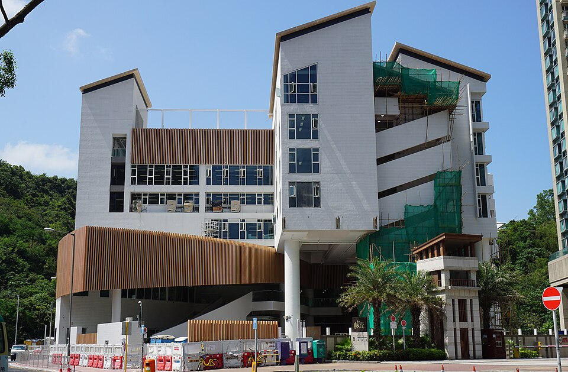

슈루즈베리 인터내셔널 스쿨 홍콩 캠퍼스 남측 · 사진: Prosperity Horizons / Wikimedia Commons, CC BY-SA 4.0
슈루즈베리 인터내셔널 스쿨 홍콩(Shrewsbury International School Hong Kong) — 학년이 해마다 늘어나는 학교
1. 어떤 학교인가
· 개교 — 2018년 홍콩 정관오(Tseung Kwan O)에 문을 연 것으로 알려져 있습니다. 영국의 슈루즈베리 스쿨(Shrewsbury School) 계열로 안내되며, 같은 계열의 학교가 태국 방콕에도 있습니다.
· 학년 — 오랫동안 만 3세부터 11세까지, 즉 초등 과정 전용 학교로 운영된 것으로 알려져 있습니다. 홍콩의 국제학교 중에서는 드문 구조입니다.
· 교육과정 — 영국 국가교육과정(English National Curriculum)을 따르는 것으로 알려져 있습니다. 학년은 Year로 셉니다.
· 캠퍼스 — 초등 연령만을 염두에 두고 지은 단일 목적 캠퍼스로 안내되고 있습니다. 실내 체육관과 수영 시설 등이 그 예입니다.
※ 학비·정원·합격률·재학생 수처럼 해마다 바뀌는 수치는 이 글에서 다루지 않습니다. 학년 구성과 개설 과정도 바뀔 수 있으니 학교 요강을 직접 확인하세요.
2. 핵심 — 지금 이 학교는 학년이 늘어나는 중입니다
이 학교를 볼 때 가장 중요한 사실입니다. 학교가 Key Stage 3, 즉 중등 초반 학년을 새로 여는 중이라고 안내한 것으로 알려져 있습니다.
· 2026년 8월 — Year 7 개설
· 2027년 8월 — Year 8 개설
· 그 이후 학년은 학교가 그때그때 안내하는 계획을 따릅니다.
· 그 뒤의 진로에 대해서는 영국 본교(슈루즈베리 스쿨)의 Year 9 진학 시 우선 고려를 받는 것으로 학교가 안내한 것으로 알려져 있습니다. 이는 합격 보장이 아니라 고려이므로 조건은 반드시 학교에 직접 확인하셔야 합니다.
정리하면 이렇습니다. 학교의 최고 학년이 매년 한 칸씩 올라가는 중입니다. 그래서 작년 블로그 글과 올해 학교 안내문의 학년 범위가 달라 보입니다. 그건 잘못된 정보가 아니라 실제로 바뀌고 있는 것입니다.
3. 홍콩 학교 구조 비교 — 학년을 담는 세 가지 방식
홍콩에는 같은 영어권 학교라도 학년을 담는 방식이 다른 형태들이 있습니다. 이 학교의 위치를 보시려면 옆에 놓고 비교하시는 편이 빠릅니다.
| 항목 | 슈루즈베리 홍콩 | 켈릿 스쿨 | 디스커버리 칼리지 |
|---|---|---|---|
| 계열 | 영국계(영국 본교 계열) | 영국계 | ESF(영어 교육 재단) |
| 개교 | 2018년 | 1976년 | 2008년 |
| 학년 구성 | 초등 + 중등 신설 중 (2026년 Year 7, 2027년 Year 8) | 초·중·고 전 과정 | Year 1~13 한 학교 |
| 마무리 과정 | 현재 해당 학년 없음 (진학 경로를 따로 확인) | IGCSE → A-Level | IB 디플로마 |
| 학부모가 확인할 것 | 다음 학교를 언제 정하나 | 편입 자리(TO) | 통학 동선(섬 생활권) |
| 자세히 | 이 글 | 켈릿 스쿨 가이드 | 디스커버리 칼리지 가이드 |
※ 개설 과정·학년 범위는 해마다 바뀔 수 있습니다. 지원 전 각 학교 요강을 직접 확인하세요.
표를 보시면 판단이 단순해집니다. 고등까지 한 학교에서 끝내고 싶다면 이미 전 학년이 열려 있는 학교가 맞습니다. 반대로 초등 시기의 환경을 우선하고 중등은 그때 다시 고르시겠다면 슈루즈베리 홍콩이 선택지가 됩니다. 홍콩의 다른 형태는 홍콩국제학교(HKIS)(미국식 AP), CDNIS(IB·캐나다 졸업장), 차이니즈 인터내셔널 스쿨(이중언어 IB), 저먼스위스 인터내셔널 스쿨에 각각 정리해 두었습니다.
4. 한국(주재원) 학생·학부모가 겪는 어려움
· "졸업"이라는 말이 다르게 쓰인다. 초등 전용 학교에서 말하는 졸업은 학교를 떠나는 시점입니다. 한국의 초등학교처럼 같은 재단 중학교로 자동으로 이어지는 구조가 아닙니다. 다음 학교를 따로 지원해야 합니다.
· 다음 학교 준비를 늦게 시작한다. 홍콩 인기 학교는 학년이 올라갈수록 자리가 줄어듭니다. 아이가 초등 고학년에 들어설 무렵에는 다음 학교 후보를 이미 좁혀 두셔야 합니다. → 편입·전학 총정리
· Year 표기가 헷갈린다. 영국식이라 Year로 세고, 한국 학년과 한 칸씩 어긋나 보입니다. 학년이 내려간 것이 아니라 세는 방식이 다른 것입니다. → 국제학교 학년 체계 총정리
· 초등인데 영어가 학습 언어로 바뀐다. 생활 회화가 빨리 늘어 부모님이 안심하시는 시기인데, 정작 문제는 교과를 읽고 설명하는 영어에서 생깁니다. 이 차이를 놓치면 중등에 가서 성적으로 드러납니다. → EAL(영어 지원 프로그램) · Learning Support
· 수학은 계산이 아니라 용어와 서술에서 막힌다. 한국에서 이미 배운 내용인데 알지브라·지오메트리 용어가 영어라서 못 푸는 경우가 흔합니다. 답만 적으면 단계 점수를 받지 못합니다.
· 학교가 커지는 시기의 변화. 학년이 새로 열리는 학교는 교사진과 시간표가 함께 바뀝니다. 학부모 상담에서 이 부분을 확인해 두시면 좋습니다. → 학부모 상담 준비법
5. 그래서 이렇게 준비합니다
🧭 먼저 — "우리 아이 학년"과 "학교 최고 학년"을 나란히 적어 본다
종이에 두 줄만 적어 보세요. 첫 줄은 앞으로 아이가 올라갈 학년을, 둘째 줄은 그 해에 학교에 열려 있을 최고 학년을 적습니다. 두 줄이 만나거나 뒤집히는 해가 학교를 옮겨야 하는 해입니다. 이 한 장이 있으면 입학 상담에서 물어볼 것이 명확해집니다. → 국제학교 입학 준비 총정리 · 오픈데이·학교 방문 준비법
📖 영어과외 — 회화가 아니라 "교과를 읽는 영어"
초등 시기에 잡아 두면 가장 값이 큰 것은 읽기 수준입니다. 교과서와 과제 지문을 읽고 요약해 말해 보는 연습, 그리고 지시어(describe·explain·compare 같은 단어가 각각 무엇을 요구하는지)를 익히는 연습을 함께 합니다. 이 두 가지가 중등의 에세이로 그대로 이어집니다. (영어 공부법 참고)
📐 수학과외 — 한국식 풀이와 영어 용어를 연결한다
아이가 이미 아는 개념에 영어 용어를 다시 붙여 주는 작업부터 합니다. 그다음 풀이 과정을 영어 문장으로 적는 습관을 들입니다. 영국식 시험은 답이 맞아도 과정이 없으면 점수가 깎입니다. (알지브라 공부법 참고)
📝 다음 학교 지원 — 서류와 평가는 함께 준비한다
다음 학교 지원에는 이전 학교 성적 기록·담임 소견·입학 평가가 함께 들어갑니다. 성적표에 적힌 표현이 무엇을 뜻하는지 먼저 읽을 줄 아셔야 준비 방향이 잡힙니다. → 성적표 읽는 법 · 진학 카운슬러 활용법
6. 홍콩의 강점 — 시차 한 시간의 화상과외
홍콩은 한국보다 한 시간 느립니다. 홍콩 오후 4시가 한국 오후 5시라, 아이의 방과 후 시간이 한국 강사진의 수업 시간과 거의 그대로 맞습니다. 따로 시간을 맞추느라 애쓰지 않아도 되는 도시입니다. 홍콩은 학원이 많지만 영국 국가교육과정에 맞춰 초등 읽기와 수학 용어를 함께 봐 주는 곳은 의외로 찾기 어렵습니다. 아이의 실제 과제와 학교가 준 채점 기준을 화면에 놓고 "어느 항목에서 깎였는지"부터 확인하는 방식이 가장 빠릅니다. 홍콩 지역 사정은 홍콩 국제학교 과외와 홍콩 수학학원·영어학원 찾기에 정리해 두었습니다.
정리
슈루즈베리 인터내셔널 스쿨 홍콩은 2018년 정관오 개교로 알려진 영국 국가교육과정 학교이고, 오랫동안 초등 전용이었습니다. 그리고 지금 2026년 8월 Year 7, 2027년 8월 Year 8로 중등을 여는 중이라고 안내된 것으로 알려져 있습니다. 그러니 이 학교를 보실 때 질문은 하나로 좁혀집니다. "우리 아이가 졸업할 때까지 학년이 이어지는가." 이어지면 그대로 가시면 되고, 이어지지 않으면 다음 학교를 언제 정할지를 입학 전에 계획에 넣으시면 됩니다. 30분 무료 상담으로 우리 아이가 지금 어느 구간에 있는지부터 함께 짚어 보세요.